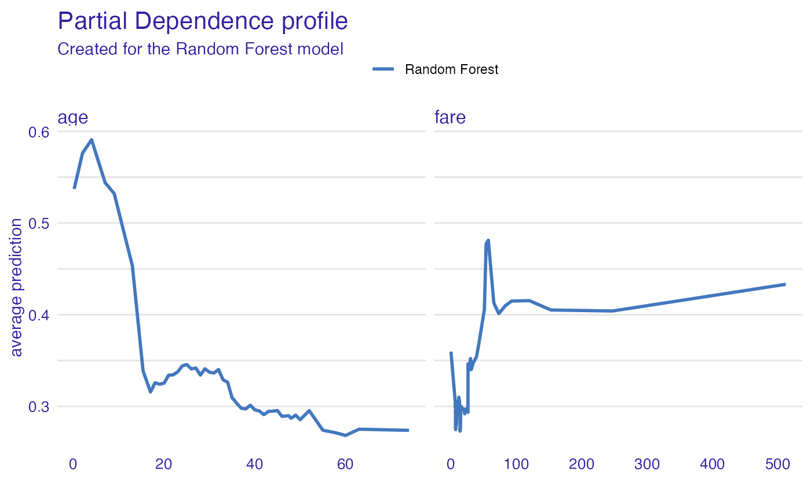
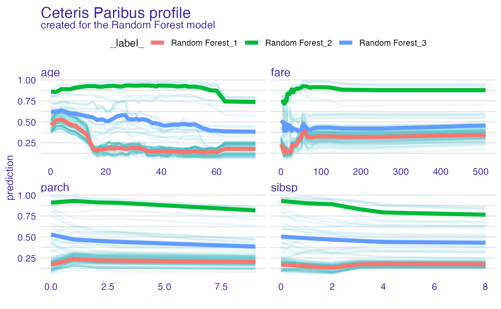

General introduction: Survival on the RMS Titanic
Przemyslaw Biecek
2021-04-07
Source:vignettes/vignette_titanic.Rmd
vignette_titanic.RmdData for Titanic survival
Let’s see an example for DALEX package for classification models for the survival problem for Titanic dataset. Here we are using a dataset titanic_imputed avaliable in the DALEX package. Note that this data was copied from the stablelearner package and changed for practicality.
#> gender age class embarked fare sibsp parch survived
#> 1 male 42 3rd Southampton 7.11 0 0 0
#> 2 male 13 3rd Southampton 20.05 0 2 0
#> 3 male 16 3rd Southampton 20.05 1 1 0
#> 4 female 39 3rd Southampton 20.05 1 1 1
#> 5 female 16 3rd Southampton 7.13 0 0 1
#> 6 male 25 3rd Southampton 7.13 0 0 1Model for Titanic survival
Ok, now it’s time to create a model. Let’s use the Random Forest model.
# prepare model
library("ranger")
model_titanic_rf <- ranger(survived ~ gender + age + class + embarked +
fare + sibsp + parch,
data = titanic_imputed, probability = TRUE)
model_titanic_rf#> Ranger result
#>
#> Call:
#> ranger(survived ~ gender + age + class + embarked + fare + sibsp + parch, data = titanic_imputed, probability = TRUE)
#>
#> Type: Probability estimation
#> Number of trees: 500
#> Sample size: 2207
#> Number of independent variables: 7
#> Mtry: 2
#> Target node size: 10
#> Variable importance mode: none
#> Splitrule: gini
#> OOB prediction error (Brier s.): 0.1418288Explainer for Titanic survival
The third step (it’s optional but useful) is to create a DALEX explainer for random forest model.
library("DALEX")
explain_titanic_rf <- explain(model_titanic_rf,
data = titanic_imputed[,-8],
y = titanic_imputed[,8],
label = "Random Forest")#> Preparation of a new explainer is initiated
#> -> model label : Random Forest
#> -> data : 2207 rows 7 cols
#> -> target variable : 2207 values
#> -> predict function : yhat.ranger will be used ( [33m default [39m )
#> -> predicted values : No value for predict function target column. ( [33m default [39m )
#> -> model_info : package ranger , ver. 0.12.1 , task classification ( [33m default [39m )
#> -> predicted values : numerical, min = 0.01598793 , mean = 0.3217425 , max = 0.9855713
#> -> residual function : difference between y and yhat ( [33m default [39m )
#> -> residuals : numerical, min = -0.7853387 , mean = 0.0004143092 , max = 0.8882866
#> [32m A new explainer has been created! [39mModel Level Feature Importance
Use the feature_importance() explainer to present importance of particular features. Note that type = "difference" normalizes dropouts, and now they all start in 0.
library("ingredients")
fi_rf <- feature_importance(explain_titanic_rf)
head(fi_rf)#> variable mean_dropout_loss label
#> 1 _full_model_ 0.3406612 Random Forest
#> 2 parch 0.3511262 Random Forest
#> 3 sibsp 0.3516744 Random Forest
#> 4 embarked 0.3524016 Random Forest
#> 5 age 0.3756701 Random Forest
#> 6 fare 0.3847851 Random Forest
plot(fi_rf)
Feature effects
As we see the most important feature is gender. Next three importnat features are class, age and fare. Let’s see the link between model response and these features.
Such univariate relation can be calculated with partial_dependence().
age
Kids 5 years old and younger have much higher survival probability.
Partial Dependence Profiles
pp_age <- partial_dependence(explain_titanic_rf, variables = c("age", "fare"))
head(pp_age)#> Top profiles :
#> _vname_ _label_ _x_ _yhat_ _ids_
#> 1 fare Random Forest 0.0000000 0.3619032 0
#> 2 age Random Forest 0.1666667 0.5251576 0
#> 3 age Random Forest 2.0000000 0.5568137 0
#> 4 age Random Forest 4.0000000 0.5659007 0
#> 5 fare Random Forest 6.1793080 0.3056719 0
#> 6 age Random Forest 7.0000000 0.5221538 0
plot(pp_age)
Conditional Dependence Profiles
cp_age <- conditional_dependence(explain_titanic_rf, variables = c("age", "fare"))
plot(cp_age)
Accumulated Local Effect Profiles
ap_age <- accumulated_dependence(explain_titanic_rf, variables = c("age", "fare"))
plot(ap_age)
Instance level explanations
Let’s see break down explanation for model predictions for 8 years old male from 1st class that embarked from port C.
First Ceteris Paribus Profiles for numerical variables
new_passanger <- data.frame(
class = factor("1st", levels = c("1st", "2nd", "3rd", "deck crew", "engineering crew", "restaurant staff", "victualling crew")),
gender = factor("male", levels = c("female", "male")),
age = 8,
sibsp = 0,
parch = 0,
fare = 72,
embarked = factor("Southampton", levels = c("Belfast", "Cherbourg", "Queenstown", "Southampton"))
)
sp_rf <- ceteris_paribus(explain_titanic_rf, new_passanger)
plot(sp_rf) +
show_observations(sp_rf)
And for selected categorical variables. Note, that sibsp is numerical but here is presented as a categorical variable.

It looks like the most important feature for this passenger is age and sex. After all his odds for survival are higher than for the average passenger. Mainly because of the young age and despite of being a male.
Profile clustering
passangers <- select_sample(titanic, n = 100)
sp_rf <- ceteris_paribus(explain_titanic_rf, passangers)
clust_rf <- cluster_profiles(sp_rf, k = 3)
head(clust_rf)#> Top profiles :
#> _vname_ _label_ _x_ _cluster_ _yhat_ _ids_
#> 1 fare Random Forest_1 0.0000000 1 0.2411080 0
#> 2 parch Random Forest_1 0.0000000 1 0.1647523 0
#> 3 sibsp Random Forest_1 0.0000000 1 0.1682318 0
#> 4 age Random Forest_1 0.1666667 1 0.4490155 0
#> 5 parch Random Forest_1 1.0000000 1 0.2519955 0
#> 6 sibsp Random Forest_1 1.0000000 1 0.1481246 0
plot(sp_rf, alpha = 0.1) +
show_aggregated_profiles(clust_rf, color = "_label_", size = 2)
Session info
#> R version 4.0.5 (2021-03-31)
#> Platform: x86_64-apple-darwin17.0 (64-bit)
#> Running under: macOS Catalina 10.15.7
#>
#> Matrix products: default
#> BLAS: /Library/Frameworks/R.framework/Versions/4.0/Resources/lib/libRblas.dylib
#> LAPACK: /Library/Frameworks/R.framework/Versions/4.0/Resources/lib/libRlapack.dylib
#>
#> locale:
#> [1] en_US.UTF-8/en_US.UTF-8/en_US.UTF-8/C/en_US.UTF-8/en_US.UTF-8
#>
#> attached base packages:
#> [1] stats graphics grDevices utils datasets methods base
#>
#> other attached packages:
#> [1] ingredients_2.2.0 ranger_0.12.1 DALEX_2.2.0
#>
#> loaded via a namespace (and not attached):
#> [1] Rcpp_1.0.6 highr_0.8 compiler_4.0.5 pillar_1.5.1
#> [5] tools_4.0.5 digest_0.6.27 lattice_0.20-41 evaluate_0.14
#> [9] memoise_2.0.0 lifecycle_1.0.0 tibble_3.1.0 gtable_0.3.0
#> [13] pkgconfig_2.0.3 rlang_0.4.10 Matrix_1.3-2 yaml_2.2.1
#> [17] pkgdown_1.6.1 xfun_0.22 fastmap_1.1.0 stringr_1.4.0
#> [21] knitr_1.31 desc_1.3.0 fs_1.5.0 vctrs_0.3.7
#> [25] systemfonts_1.0.1 rprojroot_2.0.2 grid_4.0.5 glue_1.4.2
#> [29] R6_2.5.0 textshaping_0.3.3 fansi_0.4.2 rmarkdown_2.7
#> [33] farver_2.1.0 ggplot2_3.3.3 magrittr_2.0.1 scales_1.1.1
#> [37] htmltools_0.5.1.1 ellipsis_0.3.1 colorspace_2.0-0 labeling_0.4.2
#> [41] ragg_1.1.2 utf8_1.2.1 stringi_1.5.3 munsell_0.5.0
#> [45] cachem_1.0.4 crayon_1.4.1